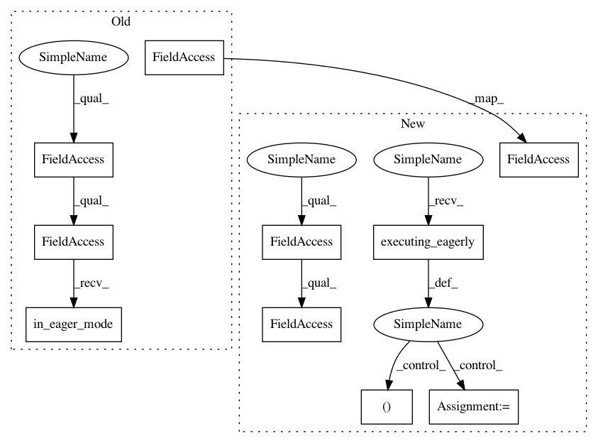

2aa5cccc7c65d14305e60e0a61781aa11cb7142d,deepchem/models/tensorgraph/layers.py,LSTM,__init__,#LSTM#Any#Any#,1146
Before Change
self.n_hidden = n_hidden
self.batch_size = batch_size
super(LSTM, self).__init__(**kwargs)
if tfe.in_eager_mode():
self._cell = tf.contrib.rnn.LSTMCell(n_hidden)
self._zero_state = self._cell.zero_state(batch_size, tf.float32)
self._non_pickle_fields += ["_cell", "_zero_state"]
try:
parent_shape = self.in_layers[0].shape
After Change
self.n_hidden = n_hidden
self.batch_size = batch_size
super(LSTM, self).__init__(**kwargs)
if tf.executing_eagerly():
self._cell = tf.keras.layers.LSTMCell(n_hidden)
self._rnn = tf.keras.layers.RNN(
self._cell, return_state=True, return_sequences=True)
self._zero_state = [tf.zeros((batch_size, n_hidden), tf.float32)] * 2
self._non_pickle_fields += ["_cell", "_zero_state"]
try:
parent_shape = self.in_layers[0].shape
In pattern: SUPERPATTERN
Frequency: 3
Non-data size: 10
Instances
Project Name: deepchem/deepchem
Commit Name: 2aa5cccc7c65d14305e60e0a61781aa11cb7142d
Time: 2019-03-28
Author: peastman@stanford.edu
File Name: deepchem/models/tensorgraph/layers.py
Class Name: LSTM
Method Name: __init__
Project Name: deepchem/deepchem
Commit Name: 2aa5cccc7c65d14305e60e0a61781aa11cb7142d
Time: 2019-03-28
Author: peastman@stanford.edu
File Name: deepchem/models/tensorgraph/layers.py
Class Name: GRU
Method Name: __init__
Project Name: deepchem/deepchem
Commit Name: 2aa5cccc7c65d14305e60e0a61781aa11cb7142d
Time: 2019-03-28
Author: peastman@stanford.edu
File Name: deepchem/models/tensorgraph/layers.py
Class Name: LSTM
Method Name: create_tensor